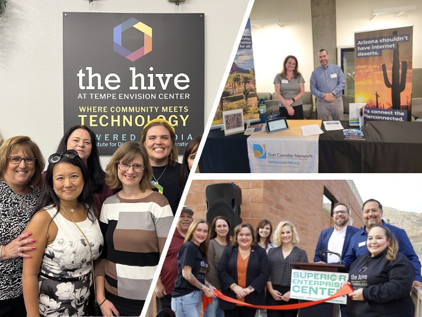
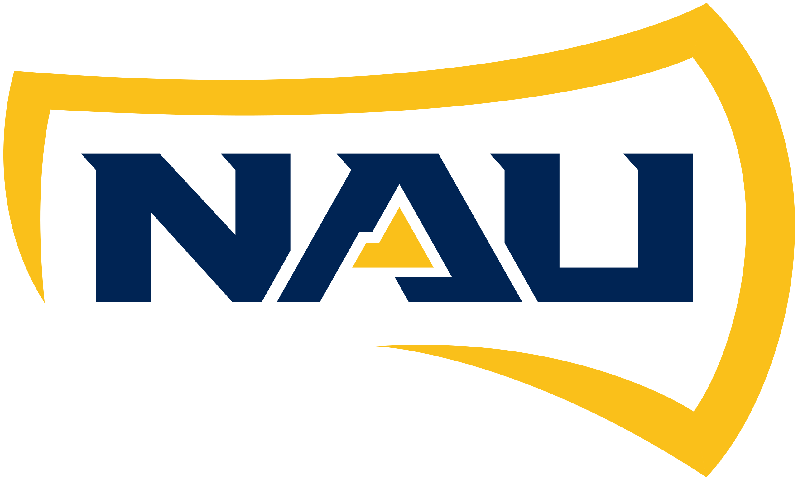
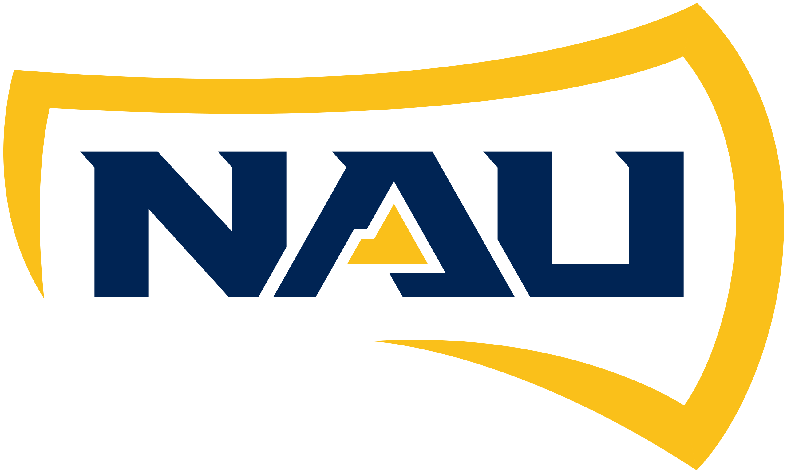
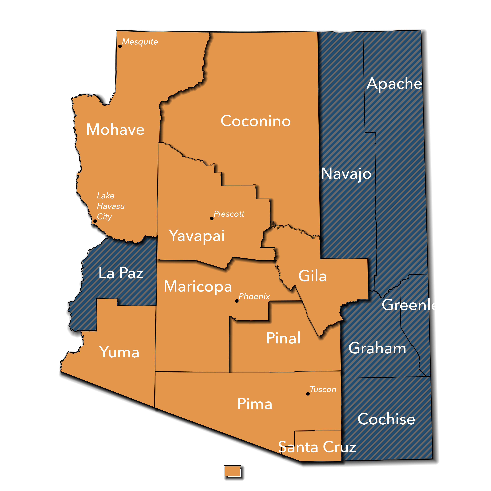

Arizona Internet, by Arizona Locals
SCN provides cutting edge fiber internet services which make up the backbone of many Arizona communities. Whether it's your local elementary school or your state university, SCN will provide the speeds you need to best achieve your goals - all while based in Tempe.
Who We Serve
We proudly serve over 60 institutions statewide, including major universities and local school districts—chances are, we're already powering what matters most to you

 


Where we Serve
SCN actively connects Arizona communities in almost every county of Arizona. We're expanding coverage across Arizona—contact us to see how we can connect your area next!